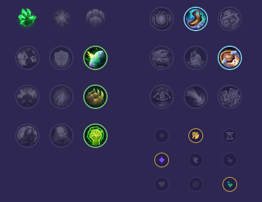

Starter: Ostrze Dorana Mikstura Zdrowia Core Bulid: Moc Trójcy Pancerniaki Krwiożercza Hydra Full Bulid: Włócznia Shojin Taniec Śmierci Anioł Stróż

Słaby przeciwko: - Jax - Mordekaiser - Shen - Teemo - Kayle - Akali Dobry przeciwko: - Garen - Ambessa - Irelia - Riven - Singed - Nasus